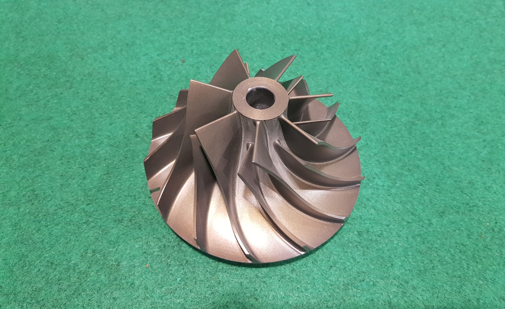

Centrifugal impeller
 The key component that makes a compressor centrifugal is the centrifugal impeller, Figure 0.1, which contains a rotating set of vanes (or blades) that gradually raises the energy of the working gas. This is identical to an axial compressor with the exception that the gases can reach higher velocities and energy levels through the impeller's increasing radius. In many modern high-efficiency centrifugal compressors the gas exiting the impeller is traveling near the speed of sound. Impellers are designed in many configurations including "open" (visible blades), "covered or shrouded", "with splitters" (every other inducer removed) and "w/o splitters" (all full blades). Both Figures 0.1 and 3.1 show open impellers with splitters. Most modern high efficiency impellers use "backsweep" in the blade shape. Euler's pump and turbine equation, plays an important role in understanding impeller performance.